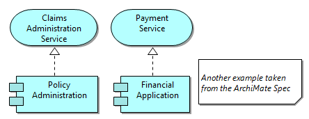

The Note Palette entry
Notes can be added to the View to allow for visual annotations. A note has no semantic meaning in the ArchiMate language.
A Note can be added from the View's palette in the "View" palette drawer:
The Note Palette entry
The following example shows elements annotated with a Note:

Using a Note in a View
A Note's text, font and fill colour can be edited in the Properties Window.
Double-clicking the Note opens the Properties Window, clicking on a selected Note allows you to directly edit the Note's text.
You can draw a connecting line from and to a Note using the "Note Connection" line tool in the Palette.